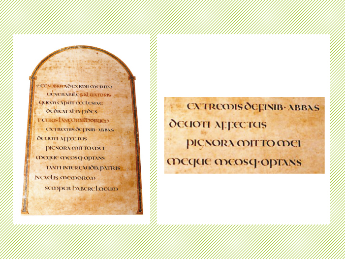
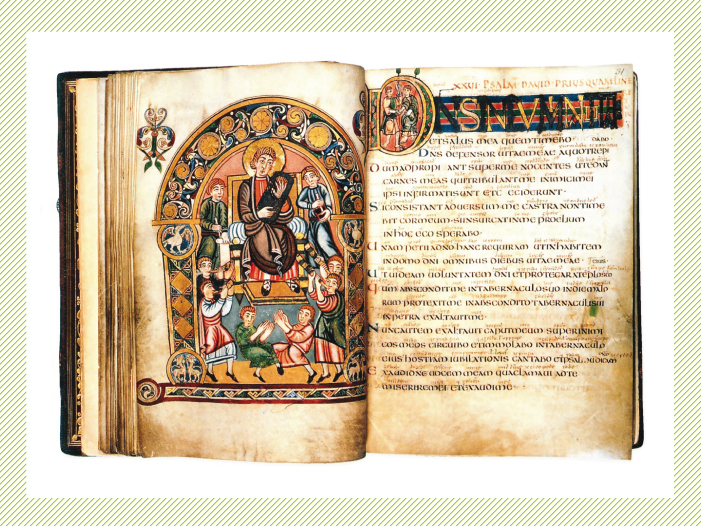

Escrituras históricas
Posted by OERT - ene 10, 2012
Letra, Teoría
Elaboración: Ana Sanfelippo. Colaboración: Fernanda Cozzi, Natalia Fernández, Marcela Romero
El análisis formal y la práctica de ciertos estilos históricos de la caligrafía permitirán la comprensión de algunas de las raíces históricas de las letras contemporáneas. Los estilos analizados aquí serán: el uncial, el carolingio y el gótico.
Algunas definiciones y herramientas
Comenzamos por definir conceptos indispensables para la comprensión de este artículo:
- Estructura: nos referiremos a cuestiones del esqueleto de la letra, a sus proporciones de alto y ancho, la relación de alturas entre ascendentes, descendentes y altura de “x”, al tipo de curvas, a la forma subyacente, a la altura de la bifurcación o al tipo de arco.
- Forma subyacente: es aquella forma que se reconoce en la impronta de la escritura. Es una presencia dominante que recorre el trazado de los signos como rasgo identitario. De esa forma deriva el ancho de los signos. Se la puede reconocer fácilmente en la letra o de la escritura.
- Bifurcación: es la altura a la que el trazo curvo se desprende o se une al asta vertical. Cuanto más alta es la bifurcación, más cercana está a las líneas de apoyo o altura de los signos; cuanto más baja, más alejada, generando contraformas más amplias. Una bifurcación alta tiende a generar arcos redondos. Una bifurcación baja tiende a generar arcos en punta.
- Arco: es el trazo curvo que se desprende de la bifurcación y que tiene determinada forma. El arco puede ser simétrico o asimétrico, redondo o en punta. Los arcos redondos tienden a ser simétricos, los arcos en punta, asimétricos.
- Relación de alturas de los signos y ancho del trazo: el alto de los signos se calcula a partir del ancho de la pluma a utilizarse. Se apoya la pluma a 90º y se dibujan trazos en un esquema que permite calcular cuántos de ellos definen cada altura.
- Ductus: Cantidad, dirección y orden de los trazos que componen el signo en una escritura. La velocidad de trazado también puede considerarse parte del ductus.
Escritura uncial
La enorme popularidad que adquirieron estas letras para la producción de libros, hizo que las cuadratas y las rústicas quedaran reservadas a los títulos e iniciales. En el siglo V es la más utilizada para textos en libros eclesiásticos, luego solo para títulos.

Vespasian Psalter (siglo VIII)
Estructura: es una escritura conformada por signos mayúsculos pero que presenta indicios de minúsculas en algunos de sus signos. Es decir algunos presentan leves ascendentes o descendentes, por ejemplo, D, H o P, o estructuras algo parecidas a las de las minúsculas, por ejemplo la M por la presencia de curvas.
La altura de los signos debe ser igual a cuatro anchos de pluma y los ascendentes y descendentes serán de apenas de uno y medio.
Las ascendentes y descendentes son escasas y cortas en relación a la altura de “x”.
La forma subyacente de las unciales es el círculo, fácilmente detectable en la O y puede trasladarse a la mayoría de los signos del sistema. Solo hay unos pocos signos con diagonales. Las contraformas internas son amplias.

La uncial posee bifurcación alta y arco redondo (que responde a la forma subyacente circular).

En la comparación entre una N uncial y una n cancilleresca podemos ver que la bifurcación en la escritura uncial es más alta. Puede verse también que en la escritura cancilleresca la curva es más tensionada debido al tipo de arco y bifurcación.
Trazo: el ángulo de apoyo de la pluma es a 15º y al ser tan poco inclinado determina un pasaje rápido del trazo grueso al trazo fino, por lo tanto el contraste es marcado.
Color: las contraformas internas son amplias, sin embargo el espacio entre letras suele ser reducido. Es un sistema de contraformas externas sintéticas porque la gran cantidad de curvas hace que sean pocas las situaciones críticas en las que haya que regular el espaciado para que el color de bloque sea parejo.
Bloque: presenta un color gris medio. La presencia escasa de rasgos ascendentes y descendentes favorece el uso de una interlínea reducida y, por lo tanto, una interpalabra también reducida.
Hay muchos modelos de unciales, con gran variación de acuerdo a la época, al lugar y al copista que trazara los manuscritos. El primero de los ejemplos presenta una interlínea amplia, decidida para el uso de notas y aclaraciones. No es una relación espacial óptima para un bloque de texto porque las líneas se separan y el bloque pierde cohesión. Los otros ejemplos pueden ayudar a la interpretación de estas relaciones espaciales.
-
 Los evangelios (siglo V).
Los evangelios (siglo V). -
Codex Amiatinus (siglo VIII).
-
Vespasian Psalter (siglo VIII).
Escritura carolingia
La escritura carolingia, desarrollada en el marco de la restauración cultural del Sacro Imperio Romano a fines del siglo VIII, no solo propuso las proporciones que hoy reconocemos como propias de las minúsculas si no que también unificó el criterio de uso para marcar palabras, párrafos, signos de puntuación y jerarquías de la página.

Biblia Vulgata (siglo IX).
Estructura: Las ascendentes y descendentes, como mínimo, tienen la misma altura que la “x”. Esto genera áreas bien diferenciadas: una más marcada en el ojo medio (la altura de “x”) y, por arriba y por abajo, las de los rasgos ascendentes y descendentes. A diferencia de la escritura uncial, no hay dudas de que la carolingia es de minúsculas.
La altura de “x” es igual a tres anchos de pluma.

La escritura se desarrolla claramente entre 4 líneas que definen las ascendentes, la altura de “x”, el apoyo y las descendentes.
Al igual que en la escritura uncial, la forma subyacente es un círculo, pero esta debe resolverse en un espacio proporcionalmente menor. En la escritura uncial, la altura de “x” es de cuatro anchos de pluma, mientras que en la carolingias es de tres.

La carolingia posee bifurcación alta y arco redondo (que responde a la forma subyacente circular).
Si comparamos una n uncial y una n cancilleresca veremos que la bifurcación en la escritura carolingia es más alta. Si comparamos una n cancilleresca con una carolingia veremos que en la cancilleresca la curva es más tensionada debido al tipo de arco y bifurcación.
Si comparamos unciales y carolingias, ambas poseen bifurcación alta y arcos redondos. Sin embargo, el arco de la carolingia es algo más tensionado.
Esa leve tensión en los arcos dialoga con la inclinación ligera del sistema: la letra va sutilmente hacia adelante a diferencia de la escritura uncial cuyo espíritu es más ortogonal a la línea de base.

Trazo: el ángulo de apoyo de pluma es a 30º. Esta es otra de las grandes diferencias con la escritura uncial que se traza con apoyo a 15º.

Otro detalle puede observarse en el lanzamiento de la bifurcación: en la escritura carolingia el trazo de la curva se superpone al asta acompañando suavemente la vertical antes de curvarse hacia la derecha generando un empalme sutil y un paso del grueso al fino más suave que en la escritura uncial. En esta última, ese encuentro entre el asta y la curva es quebrado, con un paso más veloz del grueso al fino. Esta característica deviene de la combinación entre el ángulo de apoyo de la pluma y el tipo de curva trazada. Cuanto más chato es el apoyo de la pluma, más fácil es generar uniones dadas por encuentros. Cuanto más inclinado es el apoyo de la pluma, más fácil es generar un empalme entre asta y curva.
Color: si observamos la zona de altura de “x” el color de la palabra puede llegar a ser un tanto más oscuro que en la uncial. Los signos tienden a ligarse por la facilidad y velocidad en que se trazan, con el fin de equilibrar y generar un color parejo. A su vez, es importante recordar la proporción: con un mismo ancho de pluma, la altura de “x” es menor en la escritura carolingia. Por ello, los signos se desarrollan en un espacio más reducido y sus contraformas internas son más pequeñas que en la escritura uncial.

Bloque: el color de bloque en la escritura carolingia es claro. La interlínea resulta amplia, aún con la intención de ser la mínima, ya que las ascendentes y descendentes son largas.
-
 Biblia Grandval (siglo IX).
Biblia Grandval (siglo IX). -
 Calígrafa: Sheila Waters (1990).
Calígrafa: Sheila Waters (1990).
Escritura gótica de textura
A esta forma de escribir apretada, oscura y densa se la llamó textur (tejido) y se la utilizó a partir del siglo XII sobre todo en Alemania, Inglaterra y norte de Francia.

Sagrada Biblia copiada en 1443 por el escriba Henricus de Vullenho.
Estructura: los signos condensados y las ascendentes y descendentes son cortas en relación con la altura de “x”. En este caso, la altura de “x” es igual a cinco anchos de pluma y las ascendentes y las descendentes son iguales a dos anchos de pluma.

La forma subyacente en el gótico de textura es un hexágono.
No es conveniente hablar de arco y bifurcación en esta escritura histórica, porque no hay presencia de curvas. Los signos se construyen a partir de trazos cortados. La pluma se detiene, se levanta y vuelve a apoyarse. La unión es alta, muy cercana a las líneas de apoyo y altura.

Las diagonales no son todas paralelas, la leve variación en el ángulo favorece al ritmo y evita la monotonía dentro de la textura.

Hay trazos finos, que según el modelo, pueden llegar a trazarse modificando el ángulo de apoyo o utilizando solo un vértice de la pluma.
Estos detalles o terminaciones de signos tienen que ver con el dominio y personalidad de cada calígrafo, y/o también, con el lugar y época del manuscrito trazado.
El ductus determina como característica principal del estilo la presencia de signos angulares con apoyos en forma de diamante.
Color: las contraformas internas tienen casi el mismo ancho que el el trazo. Lo mismo sucede con el espacio entre letras. Esta es la causa por la que se genera la textura en la palabra y por tanto en el bloque.

Dato: en la escritura gótica se empieza a colocar un punto sobre la letra i. Este detalle resulta indispensable para distinguir entre la i, la n y la m.
Bloque: es oscuro porque tanto la contraforma interna como el espacio entre signos son reducidos. Son el blanco mínimo necesario para que se distingan los signos entre sí y tienen casi el mismo grosor que el trazo. Esto permite que la interpalabra sea pequeña, pero no por ello insuficiente. La sensibilidad del calígrafo determinará la distancia justa que permita al lector diferenciar una palabra de la siguiente sin por ello irrumpir el ritmo característico de la textura generada por esta escritura.
La interlínea también se reduce al mínimo necesario. El color oscuro de la palabra y de la línea, y las ascendentes y descendentes cortas favorecen a esta condición.
Mientras pueda distinguirse un bloque compuesto por líneas en el que ascendentes y descendentes no se toquen, la interlínea estará cumpliendo su función.
Una escritura tan compacta colaboró para que en muchas oportunidades los textos fuesen compuestos en dos columnas. De esta forma, las líneas no se hacían tan largas y cansadoras para la lectura.
En muchos casos se recurre a ligaduras entre signos para mantener el color parejo del bloque y no quebrar la textura.
Esta entrada también está disponible en: Inglés

Related Posts
-
Familia tipográfica
September 10, 2012
Definición. Familia como sistema. Componentes de la caja tipográfica. Variables tipográficas. Ejes de construcción de variables: históricos y contemporáneos. Revisión de aspectos que se mantienen y modifican en el sistema de variables.
-
Mayúsculas, minúsculas, números y signos
September 10, 2012
Origen, relaciones y connotaciones del sistema de mayúsculas y del de minúsculas. Relaciones verticales. Legibilidad de mayúsculas y minúsculas. Características formales y función de números. Signos de entonación, puntuación y auxiliares: forma y ubicación. Las fracciones.
-
Anatomía tipográfica
September 10, 2012
Partes de la letra: ubicación y definición.
-
Proporciones del alfabeto latino
September 10, 2012
Tecnología de producción y forma resultante. Mayúsculas trajanas y su conversión en modelo. Estructuras básicas y conformación de grupos de anchos comunes. Grupos por parentesco morfológico. Anchos históricos y contemporáneos.
 Español
Español English
English 
{kind=link}
{kind=link}
{kind=link}
{kind=link}
{kind=link}
{kind=link}